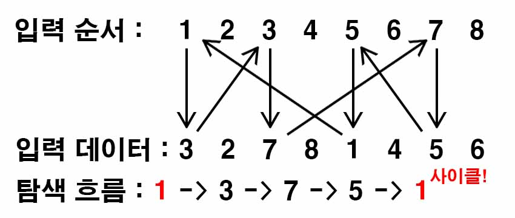

백준 10451. 순열 사이클
- https://www.acmicpc.net/problem/10451
-
문제 :
1부터 N까지 정수 N개로 이루어진 순열을 나타내는 방법은 여러 가지가 있다. 예를 들어, 8개의 수로 이루어진 순열 (3, 2, 7, 8, 1, 4, 5, 6)을 배열을 이용해 표현하면 와 같다. 또는, Figure 1과 같이 방향 그래프로 나타낼 수도 있다.

순열을 배열을 이용해 로 나타냈다면, i에서 πi로 간선을 이어 그래프로 만들 수 있다.
Figure 1에 나와있는 것 처럼, 순열 그래프 (3, 2, 7, 8, 1, 4, 5, 6) 에는 총 3개의 사이클이 있다. 이러한 사이클을 "순열 사이클" 이라고 한다.
N개의 정수로 이루어진 순열이 주어졌을 때, 순열 사이클의 개수를 구하는 프로그램을 작성하시오. -
입력 :
첫째 줄에 테스트 케이스의 개수 T가 주어진다. 각 테스트 케이스의 첫째 줄에는 순열의 크기 N (2 ≤ N ≤ 1,000)이 주어진다. 둘째 줄에는 순열이 주어지며, 각 정수는 공백으로 구분되어 있다. -
출력 :
각 테스트 케이스마다, 입력으로 주어진 순열에 존재하는 순열 사이클의 개수를 출력한다. -
풀이 :
입력받은 순서와 데이터를 정점으로 생각하고 이 둘 사이에 단 방향 간선을 만든다.
그렇게 만들어진 정점과 간선을 DFS를 통해 답을 도출하기로 했다.
DFS가 종료되면 사이클이 만들어지고 모든 탐색이 끝나면 사이클의 개수를 출력할 수 있다.
